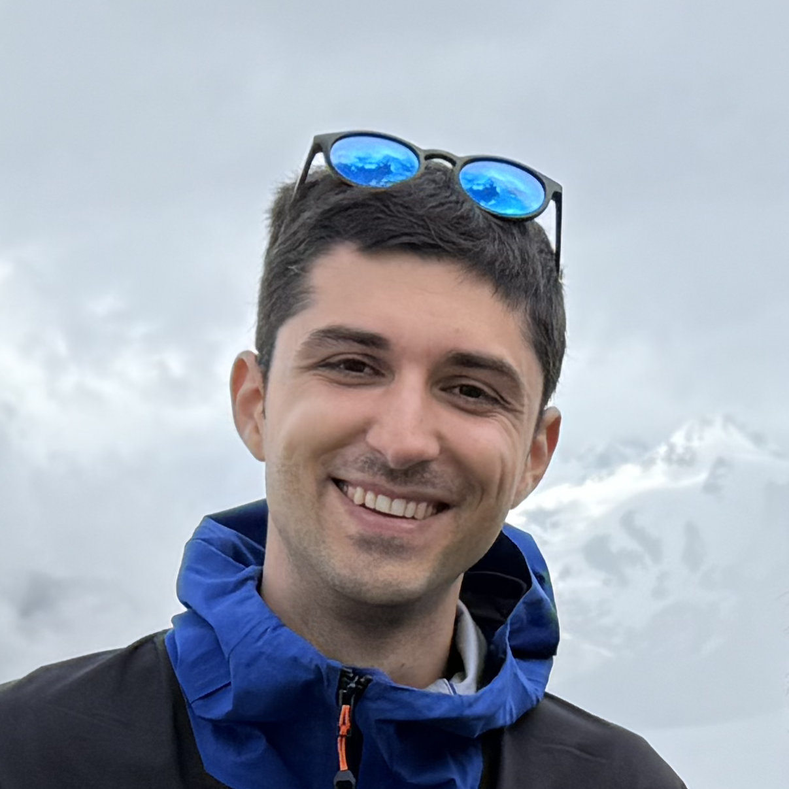

ANDERSON LAB / FALL 2026
Group Meetings & Guest Seminars
Upcoming talks and a record of past visitors.
Next speaker
Distributed Real-Time Cooperative Model Predictive Control
Distributed cooperative model predictive control for real-time multi-agent systems. Join us for a research conversation with Roland Schwan.
Roland Schwan · Dartmouth College
DATE & TIMEWed, October 21 · 2:30 p.m.
LOCATIONEE Conference Room

Dartmouth College · Guest seminar
Looking ahead
Coming up
Our shared space for ideas, works in progress, and discussion.
A growing collection
Photo archivePeople & conversations
Browse past talks and photographs from our visitors and lab discussions.
Each visit can include a speaker portrait, an abstract, papers, and a gallery of photos taken during the meeting.
Our visitors, across the world
Speaker affiliationsWhere our speakers come from
Explore the universities and research institutions represented in our lab meetings.
Pins show the institutions with which speakers are affiliated, not their places of birth. Click a pin to see the speakers.